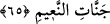

65. Eğer ehl-i kitap îman etmiş ve (kötülüklerden) sakınmış olsalardı, onların
kötülüklerini örter ve onları nimeti bol cennetlere sokardık.
“Eğer ehl-i kitap” olan yahûdî ve hristiyanlar inanılması gereken şeylere “Îman
etmiş ve” yalancılık, haram yeme gibi günahlardan “sakınmış olsalardı, onların
kötülüklerini örter” Onları affeder, bağışlardık. Böylece azaptan kurtulurlardı. “Ve
onları” ebediyyen kalmak üzere “nimeti bol cennetlere sokardık.” Böylece sevaba
nail olurlardı.
Âyette, İslâm’ın ne kadar büyük olursa olsun kendisinden önceki günahları silip
götürdüğüne ve ehl-i kitâbın müslüman olmadıkça cennete giremiyeceklerine dikkat
çekilmektedir.
66. Eğer onlar Tevrat’ı, İncil’i ve Rablerinden kendilerine indirileni (Kur’ân’ı)
doğru dürüst uygulasalardı, şüphesiz hem üstlerinden, hem de ayaklarının altından
yerlerdi. İçlerinde ılımlı bir zümre vardır; fakat çoğunun yaptıkları ne kötüdür!
“Eğer onlar” Tevrat’ın ve İncil’in ahir zaman peygamberiyle ilgili hükümlerine ve
Allah’ın onlardan aldığı diğer ahidlere uygun hareket ederek “Tevrat’ı, İncil’i ve
Rablerinden kendilerine” kendi kitaplarını tasdikleyici olarak “indirileni” Kur’ân’ı
“doğru dürüst uygulasalardı, şüphesiz hem üstlerinden hem de ayaklarının altından
yerlerdi.” Yani Allah onlara göklerin ve yerin bereket kapılarını açarak, rızıklarını
bollaştırırdı.
Âyette “doğru dürüst uygulamak” olarak tercüme edilen “ikame etmek” aslında bir
şeyin hukukûna ve hükümlerine tam olarak riâyet etmektir. Meselâ namazı ikame etmek,
onu bütün şart ve rükünlerine riâyet ederek kılmaktır.
Kur’ân’dan “Rablerinden kendilerine indirilen” diye bahsedilmesi, yahudilerin
kendilerine de indirilmiş bir kitap olmadığı şeklindeki iddiâlarının bâtıl olduğunu beyan
etmek içindir.
Yine âyet-i kerîmede İsrailoğullarına gelen belâ ve musîbetlerin kendi kazandıkları
günahlar sebebiyle olduğuna, feyyaz-ı mutlak olan Cenâb-ı Hakk’ın ihsanında kusuru